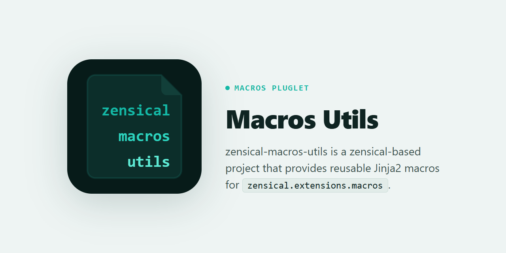
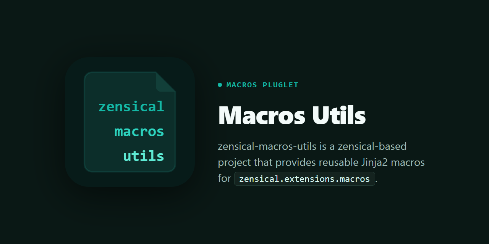

zensical-macros-utils¶


zensical-macros-utils is a zensical-based project that provides macros to extend cards, code blocks, etc, in Zensical documents.
Features¶
- Link Card: Create link cards with images and descriptions, etc
- Gist Code Block: Embed and syntax-highlight code from GitHub Gists
- X/Twitter Card: Embed tweets with proper styling and dark mode support
Usage¶
Install zensical-macros-utils¶
Config settings¶
Add the extension to your config file. If both zensical.toml and mkdocs.yml exist, zensical.toml takes priority.
extra_css = [
"stylesheets/macros-utils/link-card.css",
"stylesheets/macros-utils/gist-cb.css",
"stylesheets/macros-utils/x-twitter-link-card.css",
]
extra_javascript = [
"javascripts/macros-utils/x-twitter-widget.js",
]
[project.plugins.macros]
modules = ["zensical_macros_utils"]
[project.extra.debug]
link_card = false
gist_codeblock = false
x_twitter_card = false
extra_css:
- stylesheets/macros-utils/link-card.css
- stylesheets/macros-utils/gist-cb.css
- stylesheets/macros-utils/x-twitter-link-card.css
extra_javascript:
- javascripts/macros-utils/x-twitter-widget.js
theme:
name: material
variant: classic # omit or set "modern" to use zensical's new design
plugins:
- search
- macros:
modules:
- zensical_macros_utils
extra:
debug:
link_card: false
gist_codeblock: false
x_twitter_card: false
Start the development server:
The plugin will automatically create the required directories and copy CSS/JS files during the build process.